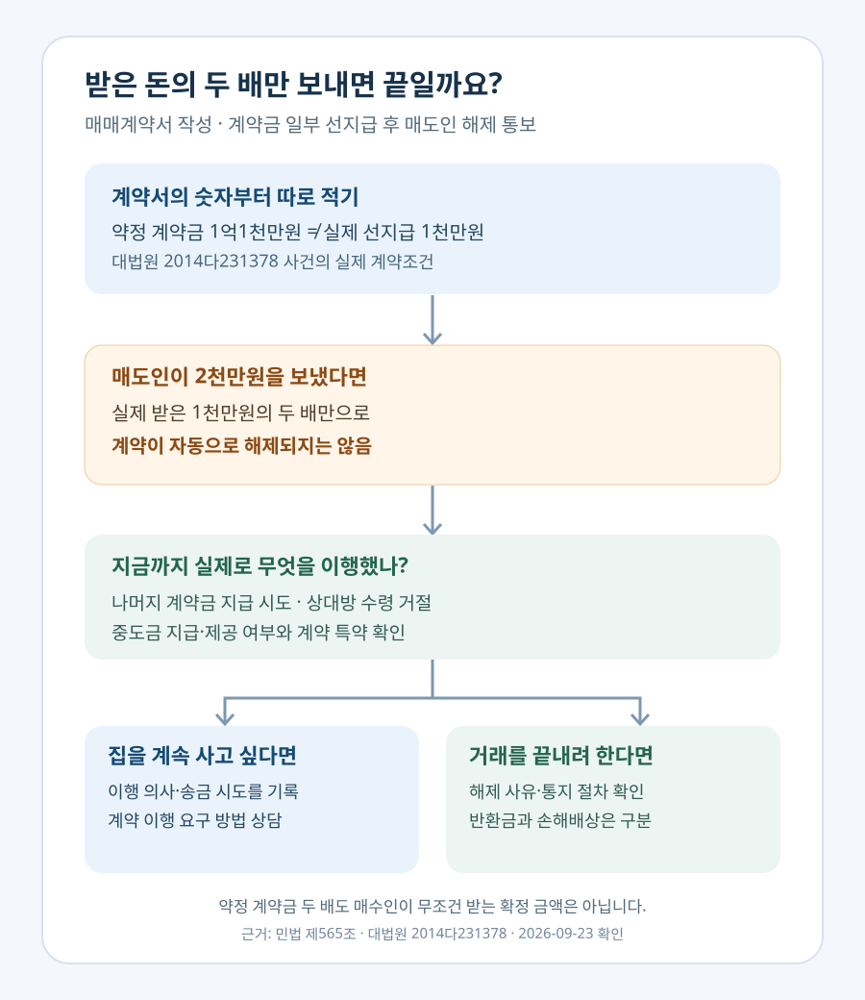

계약금 1천만원만 보냈는데 집주인이 매매계약을 깨겠다면?
계약금 1천만원을 먼저 받고 약정 계약금이 1억1천만원인데, 매도인이 2천만원만 보내며 “계약을 깨겠다”고 해도 그대로 끝나는 것은 아닙니다. 대법원은 실제로 받은 일부 금액의 두 배만으로는 매매계약을 해제할 수 없다고 판단했습니다. 그렇다고 매수인이 언제나 약정 계약금의 두 배를 자동으로 받는다는 뜻도 아닙니다. 계약을 계속 이행할지, 매도인의 위반을 이유로 해제하고 손해배상을 청구할지에 따라 문제를 나눠야 합니다.
계약서를 쓰고 1천만원만 보냈는데, 다음 날 매도인이 계좌를 닫았습니다
마음에 드는 아파트를 발견해 매매계약서를 썼다고 해봅시다. 계약금 전체는 1억1천만원으로 정하되 오늘 1천만원, 내일 1억원을 보내기로 했습니다. 그런데 다음 날 매도인이 더 팔고 싶지 않다며 입금 계좌를 닫고 2천만원을 돌려주려 합니다. 매수인이라면 “내가 보낸 돈이 1천만원이니 두 배면 끝인가?”부터 걱정하게 됩니다.
이 숫자는 지어낸 예가 아닙니다. 대법원 2015. 4. 23. 선고 2014다231378 판결의 실제 매매계약은 집값 11억원, 약정 계약금 1억1천만원, 계약 당일 송금한 돈 1천만원이었습니다. 매도인이 다음 날 수령 계좌를 닫자 매수인은 나머지 1억원을 송금하지 못했고, 매도인은 이미 받은 1천만원의 배액인 2천만원을 공탁하며 계약을 해제했다고 주장했습니다.
대법원은 실제로 받은 1천만원의 두 배만 돌려주는 방식으로는 계약을 해제할 수 없다고 봤습니다. 약정한 계약금은 1억1천만원인데 먼저 보낸 돈이 적다는 우연에 따라 매도인이 적은 비용으로 약속을 뒤집게 할 수는 없다는 취지입니다. 집값이 얼마나 올랐는지는 이 판결의 계산 근거가 아닙니다.
계약금 ‘일부’라는 말에 매매계약도 가벼워지는 건 아닙니다
먼저 계약서에서 두 숫자를 찾으세요. 하나는 매매대금과 함께 적힌 약정 계약금 총액, 다른 하나는 실제로 계좌에서 보낸 액수입니다. 계약금 총액을 1억1천만원으로 정하고 그중 1천만원만 먼저 지급했다면, 두 숫자는 분명히 다릅니다.
민법 제565조는 일정한 조건 아래 계약금을 준 사람은 이를 포기하고, 받은 사람은 배액을 상환하여 계약을 해제할 수 있도록 규정합니다. 흔히 말하는 ‘계약금 두 배’가 여기서 나옵니다. 다만 계약금 분할 지급 약정에서 일부만 지급된 경우에는 그 해약금 규정이 당연히 바로 작동한다고 볼 수 없습니다. 위 대법원 판결은 계약금 전액 또는 잔액을 아직 지급하지 않았다면 계약금계약이 성립하지 않아 그 규정만으로 마음대로 매매계약을 해제할 수 없다는 종전 판례도 함께 인용했습니다.
중요한 것은 “돈을 조금 보냈으니 계약 자체가 없던 일”이라는 결론도, “계약서가 있으니 매도인은 절대 해제할 수 없다”는 결론도 피하는 것입니다. 계약의 성립 여부, 계약금 분할 지급 약정, 해약금 조항과 실제 이행 상황을 구분해서 봐야 합니다. 정식 계약서를 쓰기 전 문자로 돈만 보낸 가계약이라면 성립 여부부터 다를 수 있으니 가계약금 안내를 별도로 확인하세요.
2천만원을 거절했다고 2억2천만원이 자동 입금되는 건 아닙니다
| 숫자 | 이 사건에서 뜻하는 것 | 바로 결론을 내면 안 되는 이유 |
|---|---|---|
| 1천만원 | 매수인이 먼저 지급한 계약금 일부 | 약정 계약금 전부가 아님 |
| 2천만원 | 매도인이 일부 수령액의 두 배라며 공탁한 돈 | 대법원은 이 돈만으로 해제되지 않는다고 판단 |
| 1억1천만원 | 계약서에서 약정한 계약금 총액 | 실제 송금액과 혼동하면 안 됨 |
| 2억2천만원 | 약정 계약금의 두 배를 산술적으로 계산한 값 | 분할 지급 중에도 매수인이 무조건 받는 확정 배상금이 아님 |
| 8천7백만원 | 이 사건에서 인정된 반환 1천만원 + 손해배상 7천7백만원 | 계약 위반과 손해배상 조항을 따로 심리한 개별 판결 결과 |
판결에서는 매도인이 소유권 이전을 거절한 뒤 매수인이 계약을 해제했고, 법원은 매도인이 받은 1천만원의 반환과 계약상 손해배상을 구분했습니다. 원심은 손해배상 약정액 1억1천만원이 지나치게 많다고 판단해 70%인 7천7백만원으로 감액했고 대법원이 그 판단을 유지했습니다. 실제 결과인 8천7백만원은 ‘계약금 일부를 보냈을 때 무조건 받는 돈’이라는 공식이 아닙니다.
계약금을 두 배로 돌려주는 자발적인 해제와, 약속을 지키지 않은 데 따른 계약 해제·손해배상은 출발점과 요건이 다릅니다. 계약서에 적힌 위약금·손해배상 문구가 같아 보여도 내용과 사정에 따라 감액이나 별도 판단이 가능합니다. 상대방이 돈을 보내 왔다고 해서 섣불리 “두 배면 받아야 한다”고 동의하지 말고, 본인이 원하는 것이 집을 사는 것인지 정산받고 끝내는 것인지부터 판단해야 합니다.
여기서 ‘계약금 2배’라는 표현도 오해하기 쉽습니다. 계약금 전액을 이미 지급한 뒤 매도인이 적법하게 해약금 방식으로 계약을 끝낼 수 있는 단계라면, 받은 계약금을 포함해 배액을 상환한다는 뜻입니다. 내가 지급한 계약금 반환에 더하여 또다시 그 두 배를 받는 ‘세 배 수령’이 아닙니다. 그러나 이번처럼 전액 지급 전에 매도인이 먼저 수령을 막았다면 처음부터 그 간단한 산식으로 끝낼 수 있는지가 문제입니다.
손해배상 예정액은 별도 조항에 적혀 있어야 할 수도 있고, 약정이 있더라도 법원이 지나치게 큰 액수를 감액할 수 있습니다. 민법 제398조 제2항의 내용입니다. 위 사건의 70%도 그 사건 자료를 본 법원의 판단이지, 다른 아파트 계약에서 쓰는 고정 할인율이 아닙니다. 계약서에 위약금 조항이 없다면 손해가 얼마인지와 그 입증 문제도 별도로 검토해야 합니다.

나머지 계약금을 못 보냈다면 이유를 기록해야 합니다
위 사건에서 매수인은 약속한 다음 날 1억원을 보내려고 했지만 매도인이 계좌를 폐쇄해 실패했습니다. 매수인이 일부러 지급하지 않은 것과 매도인이 돈을 받지 않은 것은 전혀 다른 사정입니다. 대법원은 이 수령 거절 때문에 매수인에게 지급 실패의 책임을 돌릴 수 없다고 보았습니다.
실제로 이런 일이 생기면 계약서, 이체 확인증, 이체 실패 화면, 매도인이나 중개사에게 보낸 문자와 답장을 보존하세요. 송금 가능 시각과 상대방이 거절했다고 알린 시각도 정리합니다. 계약서에 적힌 지급 기한을 놓치지 않도록 상대방에게 이행 의사를 명확히 전하되, 새 계좌를 받아도 등기부상 소유자와 수령권한을 확인한 뒤 송금해야 합니다. 법원 공탁은 요건과 절차가 있는 별도 대응이므로 사례만 보고 바로 따라 해서는 안 됩니다.
예를 들어 금요일에 계약서를 쓰고 1천만원을 송금했는데 월요일에 나머지 9천만원을 보내기로 했다면, 계약서와 대화에 적힌 지급일이 우선 확인 대상입니다. 월요일 오전 이체가 실패했다면 오류 화면만 남기지 말고 사용 계좌가 계약서의 수령 계좌와 같은지, 매도인에게 새 계좌 또는 수령 방법을 물었는지, 중개사가 어떤 답을 전달했는지를 시간별로 기록합니다. 이 돈을 이미 보낼 준비가 됐다는 점과 단순히 “보낼 생각이었다”는 말은 분쟁에서 다르게 평가될 수 있습니다.
중도금까지 지급했거나 지급하려 했다면 ‘배액으로 끝’이 더 어려워질 수 있습니다
계약금 약정이 전부 이행돼 해약금 규정이 적용된다고 해도 기간 제한이 있습니다. 민법 제565조는 당사자 한쪽이 이행에 착수하기 전까지 해약금으로 해제할 수 있다고 정합니다. 중도금 지급은 중요한 판단 자료입니다. 단순히 계약서에 “잔금 전까지 매도인은 계약금 배액으로 해제”라고 적혀 있다고 해서 법의 이행 착수 기준이 자동으로 지워지는 것도 아닙니다.
대법원 2006. 2. 10. 선고 2004다11599 판결은 계약에 특별한 제한이 없다면 중도금 지급기일 전에도 이행에 착수할 수 있고, 그 사안에서는 매도인의 배액 상환에 의한 해제를 인정하지 않았습니다. 그렇다고 매수인이 언제든 예고 없이 돈을 넣으면 무조건 해제권이 사라진다는 뜻은 아닙니다. 기일 전 지급 제한 특약, 실제 제공 방법, 매도인의 거절과 통보 시점까지 살펴야 합니다.
이행에 착수한다는 말은 마음속 결심이나 대출 상담만으로 충족된다고 단정하기 어렵습니다. 실제로 계약의 이행으로 볼 만한 행위가 있었는지 봅니다. 반대로 “중도금 날짜가 아직 안 왔으니 매도인은 반드시 계약금 두 배로 해제할 수 있다”는 설명도 부정확합니다. 대법원이 특별한 제한이 없는 지급기일 전의 중도금 제공을 따져 본 이유가 여기에 있습니다. 중도금 날짜를 앞당기거나 공탁하기 전에는 계약서와 사전 통지 내용을 전문가에게 보여 주는 것이 안전합니다.
매도인이 계약을 깨겠다고 하면 이것부터 확인하세요
- 계약서 숫자를 분리합니다. 집값, 약정 계약금, 지금까지 송금한 금액, 나머지 지급일과 중도금·잔금일을 각각 적습니다.
- 매도인의 표현을 그대로 남깁니다. 배액 해제인지, 가격을 더 올려 달라는 제안인지, 소유권 이전을 거부한다는 뜻인지 문자 등으로 확인합니다.
- 이미 이행한 사실을 확인합니다. 계약금 전액이나 중도금을 지급했는지, 상대방의 계좌 폐쇄·수령 거절이 있었는지 시간 순서로 기록합니다.
- 내 목표를 정합니다. 집을 그대로 살 생각이라면 계약 이행을 요구하는 쪽이고, 거래를 끝내려면 적법한 해제 방법과 반환·손해배상을 따져야 합니다. 두 방향을 혼용한 문자부터 보내지 마세요.
- 큰돈을 움직이기 전 상담합니다. 중도금 조기 지급, 공탁, 해제 통보, 내용증명은 개별 계약서와 사건 경과에 따라 결과가 달라집니다. 증빙을 갖춰 변호사나 대한법률구조공단에 상담을 요청할 수 있습니다.
예컨대 주택대출 실행, 기존 집 처분, 이사 일정까지 잡혔다면 받지 못한 이익이나 실제 비용 문제도 얽힐 수 있습니다. 반대로 아직 계약금 일부만 지급한 상태에서 계약서의 나머지 지급 약속을 내가 어겼다면 내 책임을 먼저 확인해야 합니다. 여기에는 일률적인 ‘계약 파기 벌금표’가 없습니다.
매도인이 “다른 사람이 더 비싼 가격에 사겠다고 한다”고 말한다면 구두 제안과 법적 해제 통보를 섞어 받아들이지 마세요. 새 가격으로 계약을 다시 쓰는 데 동의할지, 기존 가격의 계약을 그대로 이행할지는 매수인이 먼저 결정할 문제입니다. 전화로 들은 말을 문자로 다시 확인해 두고, 이미 잡은 대출·이사 일정과 남은 지급 기한도 함께 점검합니다. 매도인이 제3자와 매매를 진행하려는 상황이라면 소유권 이전 문제가 생길 수 있으므로 지체 없이 개별 법률 조언을 구하세요.
중개사가 “일단 돈 받고 새 집을 찾자”고 권하더라도 바로 동의할 필요는 없습니다. 집을 사기 위해 쓴 실측·대출 준비 비용이 있는지, 같은 가격대의 대체 매물을 찾을 수 있는지, 기존 집 매도 일정이 묶여 있는지에 따라 최선의 선택이 달라집니다. 법적 주장과 실무상 합의는 별개입니다. 합의를 택한다면 반환액과 지급일뿐 아니라 이 계약에 관해 추가 청구를 하지 않을 것인지까지 서로 같은 뜻인지 서면으로 확인하세요.
자주 묻는 질문
집주인이 2천만원을 송금했는데 받으면 계약 취소에 동의한 건가요?
송금 사실만으로 내 의사가 자동 확정된다고 단정할 수는 없지만, 돈을 사용하거나 “취소에 동의한다”고 답하면 다툼이 복잡해집니다. 계약을 유지하려면 해제에 동의하지 않는다는 의사를 명확히 알리고 송금 경위와 반환 문제를 개별 상담하세요.
계약금을 두 번에 나눠 보내기로 했어도 매매계약은 유효한가요?
계약금의 분할 지급과 매매계약 자체의 성립은 구별해야 합니다. 목적물·대금·당사자 등 계약의 합의가 있었는지, 서면이나 문자에 무엇이 정해졌는지 살펴야 합니다. 일부 지급이라는 사실 하나로 매매계약이 무조건 무효가 되지는 않습니다.
매도인이 다른 사람에게 더 비싸게 팔면 2억2천만원을 받을 수 있나요?
무조건 그렇지는 않습니다. 해약금 해제 요건을 갖췄는지와 계약 위반을 이유로 한 손해배상은 다릅니다. 실제 대법원 사건도 산술적인 2억2천만원이 아니라 계약 위반·위약금 조항과 감액을 따로 판단했습니다.
가계약금 1천만원만 보낸 경우도 같은 판결인가요?
이 판결에는 작성된 매매계약서와 약정 계약금 총액, 분할 지급일이 있었습니다. 계약 성립이나 계약금 총액조차 정해지지 않은 가계약은 먼저 그 사실을 확인해야 하므로 같은 숫자를 그대로 적용하면 안 됩니다.
공식 자료
- 국가법령정보센터 — 민법 제565조(해약금)
- 국가법령정보센터 — 민법 제398조(배상액의 예정)
- 대법원 2015. 4. 23. 선고 2014다231378 판결 — 계약금 일부 지급과 매도인의 해제
- 대법원 2006. 2. 10. 선고 2004다11599 판결 — 지급기일 전 이행 착수
- 대법원 보도자료(2015. 7. 22.) — 계약금 일부 지급 사건의 해약금 기준
정보 기준일: 2026-09-23. 이 글은 매매계약서에 계약금 총액과 분할 지급일을 정한 사례를 중심으로 설명합니다. 해제 가능 시점, 위약금 감액, 손해배상과 가계약의 성립 여부는 각각 다른 문제입니다. 큰 금액의 송금·공탁·해제 통보 전에는 계약서와 통신 기록을 갖춰 개별 법률 상담을 받으세요.
계약 전후 함께 확인하세요
- 매매 잔금일 체크리스트중도금·잔금·등기와 인도 일정 확인
- 잔금일 정산 계산기계약 뒤 남은 자금 흐름 확인